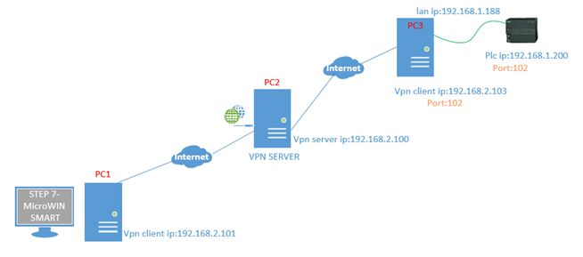
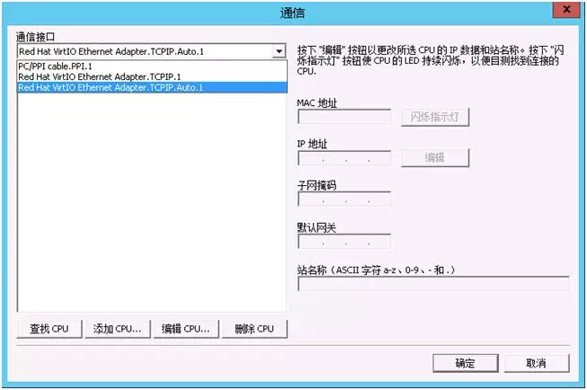
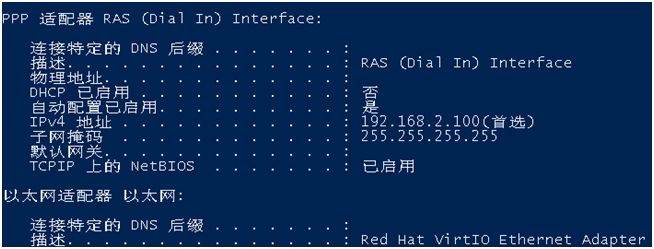
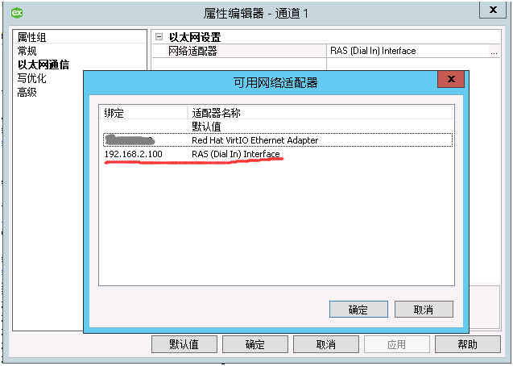
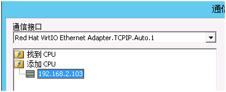

远程连接一台S7-200 SMART PLC，网络方案如下图：

PC2拥有公网IP，配置为vpn server，PC1和PC3通过vpn连接到PC2，PC3局域网连接ip地址为192.168.1.200的s7-200 smart plc，在PC3上把plc的102端口映射到PC3 vpn client ip的102端口，这样PC1上的STEP 7-MicroWIN SMART就可以通过PC3 vpn client ip的102端口连接plc了。
当打开STEP 7-MicroWIN SMART，准备连接plc

可在通信接口里竟然没有vpn 适配器

正好pc1上安装有KEPServerEX 6，打开发现是可以扫描到vpn适配器，这说明STEP 7-MicroWIN SMART扫描接口的能力还有待加强。

可是STEP 7-MicroWIN SMART无法选择需要的通讯接口，怎么连接？更谈不上可以扫描到在线plc了。那既然知道待连接的ip地址，直接添加ip可不可以连接，添加pc3 vpn client ip（192.168.2.103）后，点击“确认”，plc直接连接上了。

这个可以给大家在连接s7-200 smart plc解决类似的问题提供个参考。